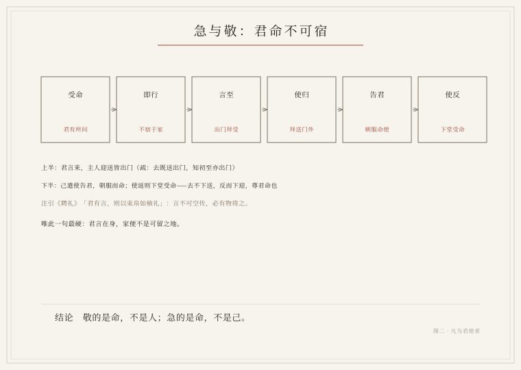

曲礼上 · 一·九十七 · 第 95 课
为君出使，既受命，君之所言不可在家过夜，须即行；君有言至，主人出门拜受；使者归，主人拜送于门外；臣遣使告君，则朝服而命之，使者返则下堂受命。
说什么事：凡为君使者，已受命，君言不宿于家；君言至，则主人出拜君言之辱，使者归，则必拜送于门外；若使人于君所，则必朝服而命之，使者反，则必下堂而受命。
落在哪一层：仪，兼及分。君命之行，快慢、迎送、升降皆有定。
为何编在此位：上节言赠物之命，此节言君命之行。由物及命，由私及公。
【经】凡為君使者，已受命，君言不宿於家。君言至，則主人出拜君言之辱。使者歸，則必拜送於門外。若使人於君所，則必朝服而命之。使者反，則必下堂而受命。
【注】急君使也。言謂有故所問也。《聘禮》曰：「君有言，則以束帛如饗禮。」敬君命也。此謂國君問事於其臣。此臣有所告請於其君。
君言不宿于家 疏「受君言宜急去，不得停留宿于家也」，引《聘礼》「遂行，舍于郊」。
言 注「言谓有故所问也」；疏「或问其臣，或问他人」。郑注《聘礼记》「有故，谓灾患及时事相告也」。
束帛如飨礼 注引《聘礼》。疏「有言必有物将之」；引臧孙辰告籴于齐、公子遂如楚乞师、晋侯使韩穿来言汶阳之田。
君言之辱 疏「辱者，言屈辱尊者之命来也」。君命至己，是尊者屈己，故称辱。
拜送于门外 疏「去既送出门，则知初至迎亦出门也」。
朝服而命之 疏「臣有故而遣使告君……敬君，故朝服命使也」。
下堂而受命 疏「去不下送，反而下迎者，尊君命也。不出门者，己使卑于君使也」。
凡为君出使的，已受命，君之所言不可在家过夜。君有言到，主人出门拜受君命之辱；使者回去，主人必拜送于门外。若遣人往君处，必朝服而命之；使者返，必下堂受命。
一节四事，都在「急」与「敬」两个字上。受命即行，是急；出门拜受、拜送，是敬；朝服命使、下堂受命，是敬之加厚。君命不可宿，是本节最硬的一句。
第一层 不宿于家 君言在身，家便不是可留之地。急君使，不是怕误事，是不敢以己之安顿君之命。
第二层 有言必有物 注引《聘礼》「以束帛如飨礼」。言不可空传，须有物将之——此与上节「问犹遗也」一理。
第三层 迎送皆出门 疏以「去既送出门」推「初至亦出门」。迎与送对称，礼在两端都做足。
第四层 朝服与下堂 遣使告君，朝服而命；使返，下堂受命。去时不下送、返时下迎，疏说「尊君命也」——敬的是命，不是人。
与今日何干 上级交办的事，当天就办，不在手里压一夜；代公司请示，先整装再派人；回话到了，起身接。此节之今形。
| 左 | 右 |
|---|---|
| 君言不宿于家 | 受命即行，不留宿 |
| 有言必有物 | 束帛将之，如飨礼 |
| 出拜君言之辱 | 出门迎受，称尊命为辱 |
| 拜送于门外 | 使者去，送出大门 |
| 朝服而命使 | 遣使告君，先整其服 |
| 下堂而受命 | 使返，降堂而受，尊君命 |
画门外一角：门扇半开，门槛外一段石阶上新踏的足迹由内向外；门内案上放着一束未及收起的帛（卷而未系），案旁一只行囊已束好。不画人、不写文字。赭色只在帛束的系带。
